Arduino IDE User Guide
Arduino IDE is a simple and easy-to-use open-source development environment that supports a variety of microcontrollers, including the ESP32. Here, you can unleash your creativity and write your own programs.
1. Install Arduino IDE
Click here to visit the Arduino IDE website and download the installation package suitable for your computer version. This example will demonstrate using Windows.
{kind=link}
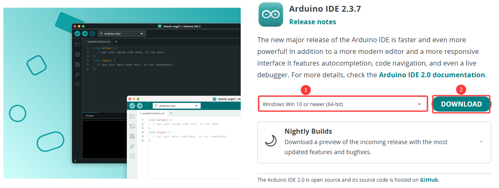
Read and accept the License Agreement.

Select the desired installation options.
{kind=link}
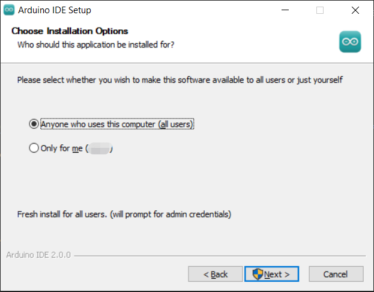
Choose the installation path. It is recommended to install the software on a non-system drive.

Click Install and wait for the process to complete. Finally, click Finish.

2. Add ESP8266 Board Manager
Open the Arduino IDE, click File → Preferences in the upper left corner, and copy and paste the following address into the Additional Board Manager URLs input box.

After entering the URL, click OK.
https://www.arduino.me/package_esp32_index.json
http://arduino.esp8266.com/stable/package_esp8266com_index.json
{kind=link}
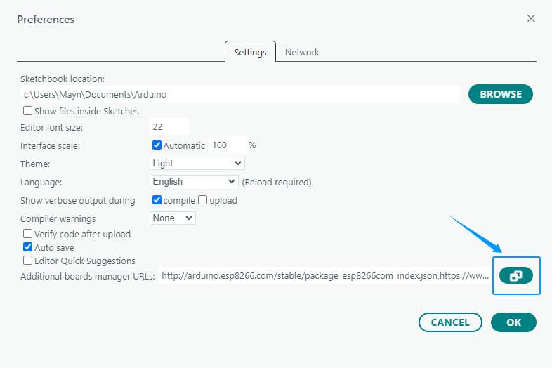
{kind=link}
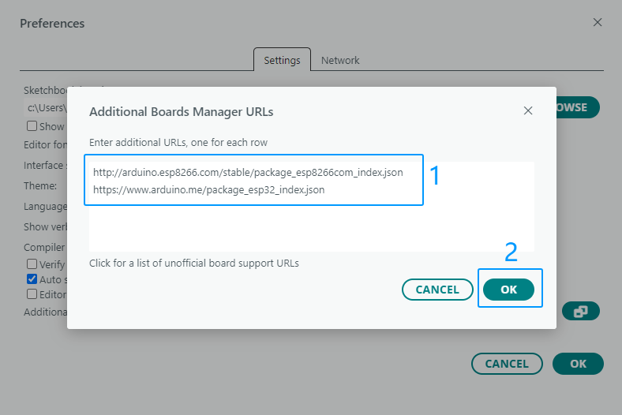
After completing this step, close and reopen the Arduino IDE.
3. Download ESP8266 Core Package
Click on the BOARDS MANAGER icon on the right and search for “ESP8266”.
{kind=link}
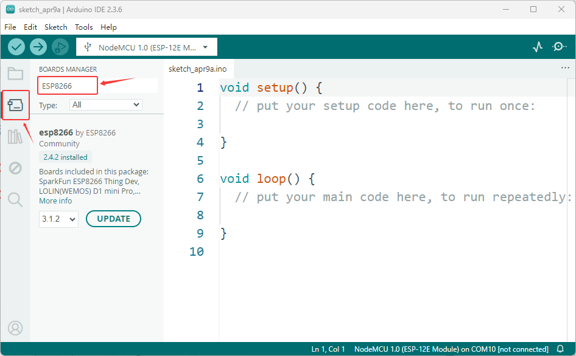
Find the core package named esp8266 by ESP8266 Community, select version 2.4.2, and click the install button to install it.
{kind=link}
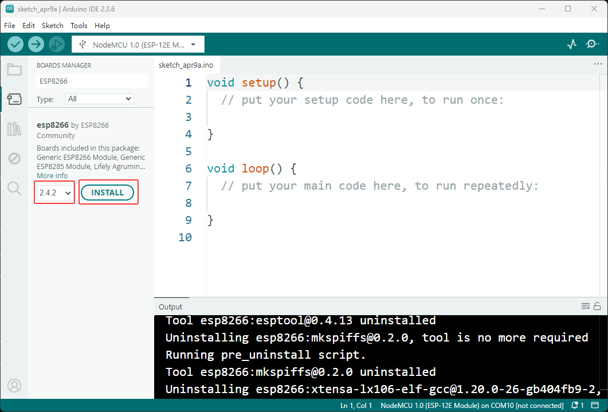
The prompt for successful installation indicates that the ESP32 core package has been successfully installed.
{kind=link}
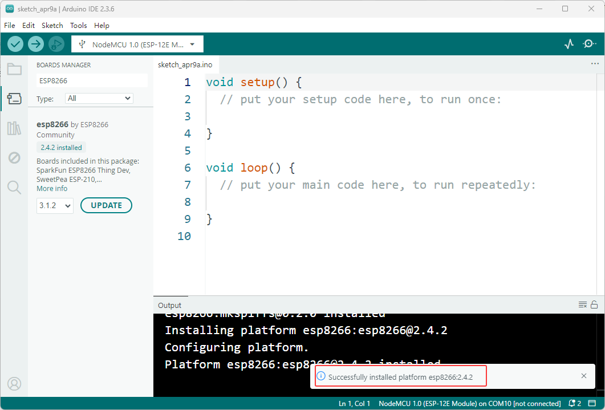
Note
It is recommended to install the core package version 2.4.2 for this package. Using other versions may cause program or functional abnormalities
During the download process of the core package, it may fail due to network failures. You can try several more times.
4. Add Libraries
The Arduino library simplifies development by encapsulating driver code, allowing users to quickly integrate sensors and modules without writing low-level functions and easily expand hardware functionality.
Most of the library files in this kit are included with the Arduino IDE; only the infrared library needs to be downloaded separately. The specific download method is described below.
On the right side of the Arduino IDE interface, click the “Library Manager” icon.
{kind=link}
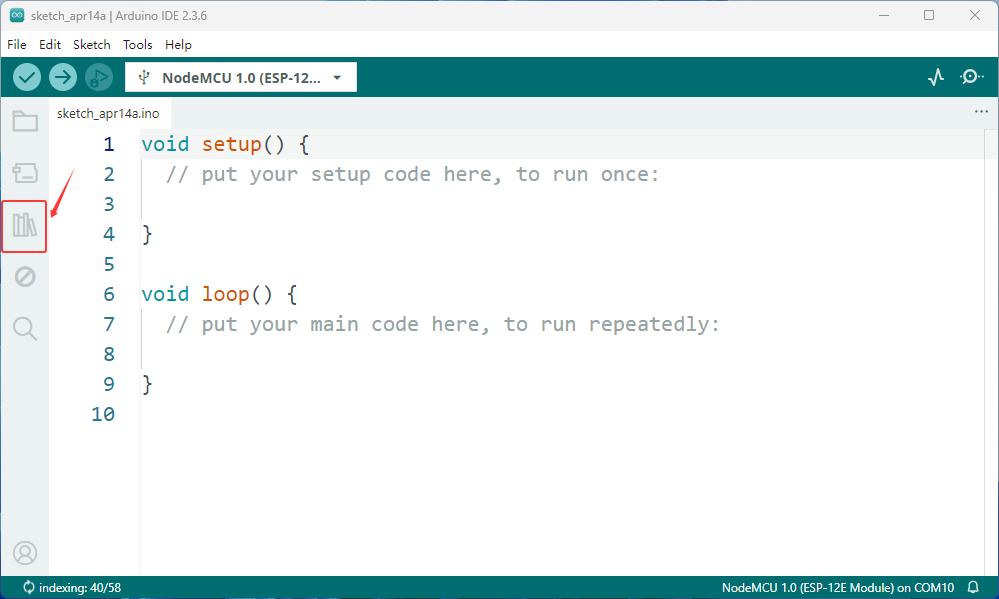
Enter keywords in the search box to find the required library, and then click “Install” to download it.
{kind=link}
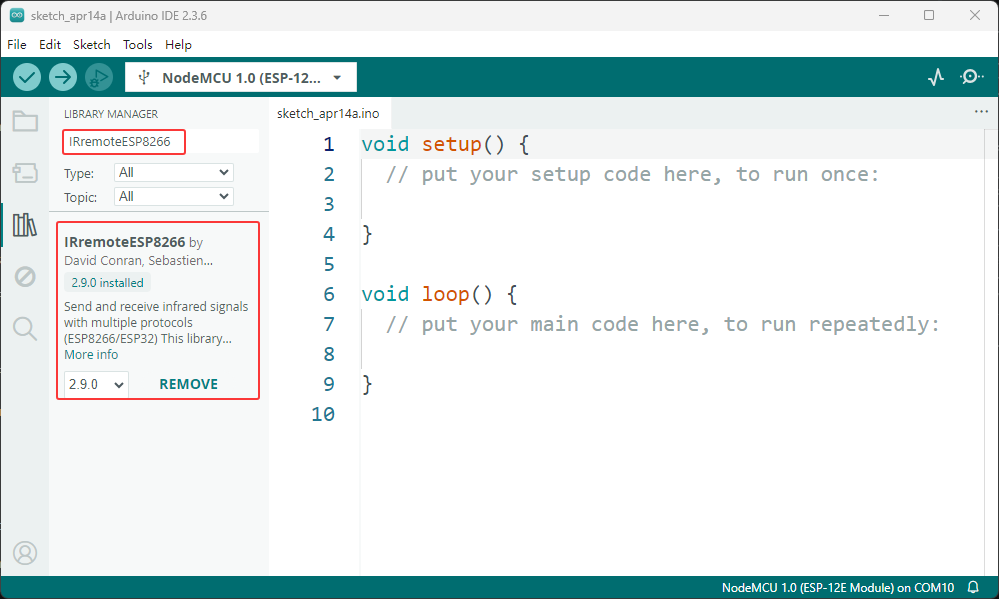
Just wait for the installation to complete.
{kind=link}
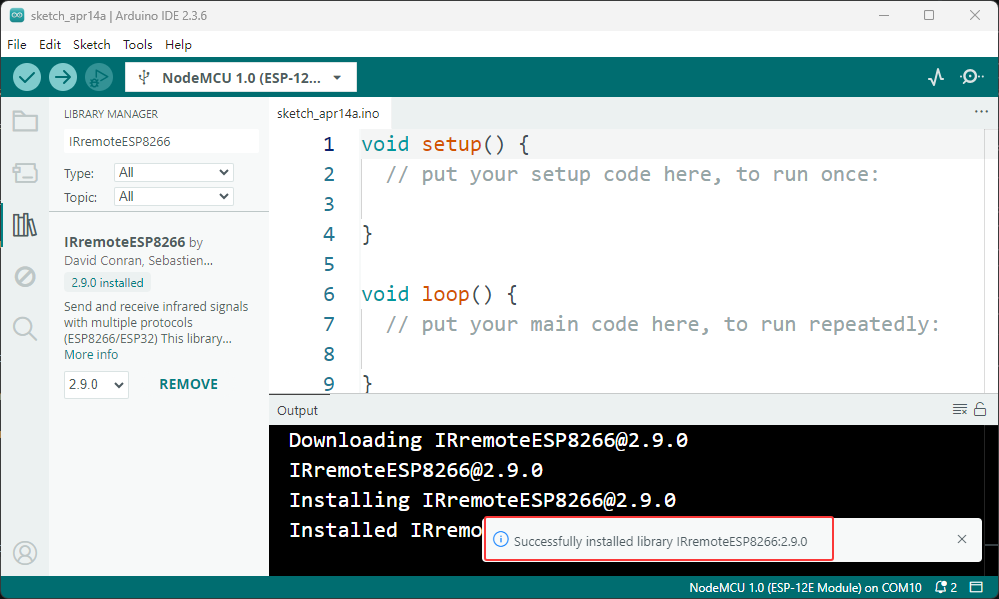
5. Install Serial Port Tool
After connecting the ESP8266 to the computer, a USB-to-serial driver needs to be installed to establish communication. For detailed installation steps, please click here. Install Serial Port Tool
If you have already successfully installed the driver, you can skip this step.
6. Upload Test Code
To verify that the Arduino IDE configuration is correct and that the ESP8266 development board is working properly, please use the following code to test.
//ESP8266 Development Board Test Code
void setup() {
Serial.begin(115200);
delay(1000);
}
void loop() {
Serial.println("ESP8266 development board successfully tested");
delay(2000);
}
Copy the code above into the Arduino IDE.
As shown in the image below, search for and select the corresponding development board and serial port.
{kind=link}
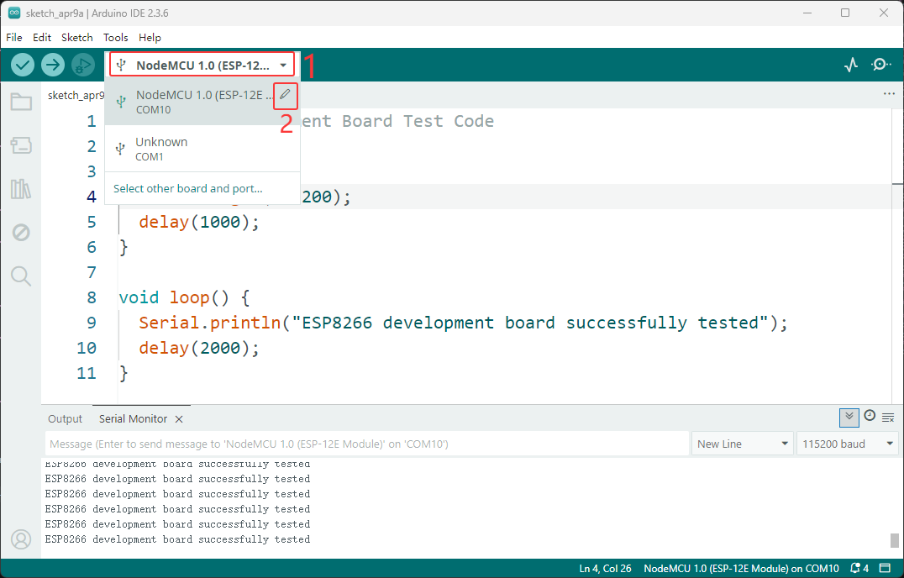
{kind=link}
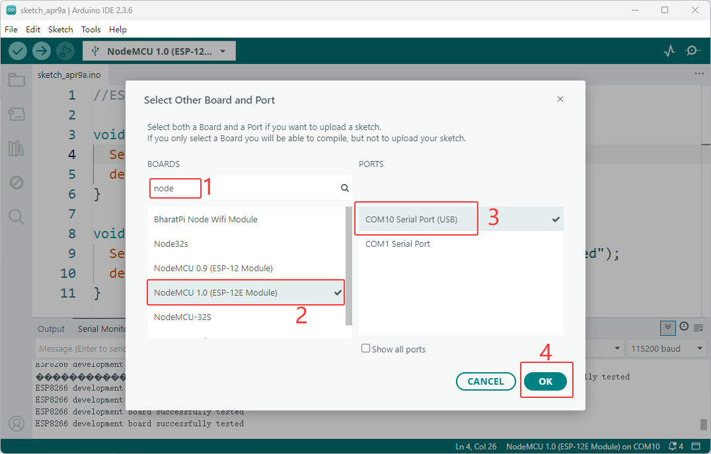
Click the Upload button to upload the code to the development board.
{kind=link}
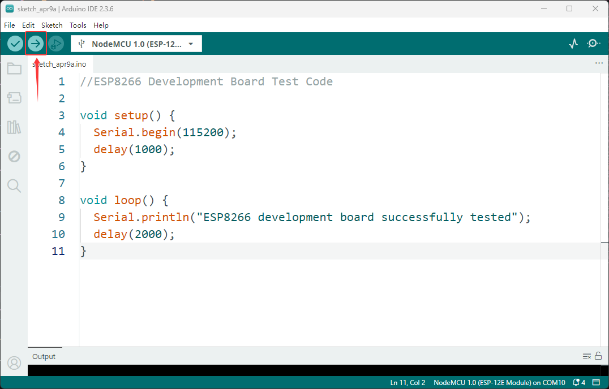
After clicking upload, the upload progress will be displayed in the output window.
{kind=link}
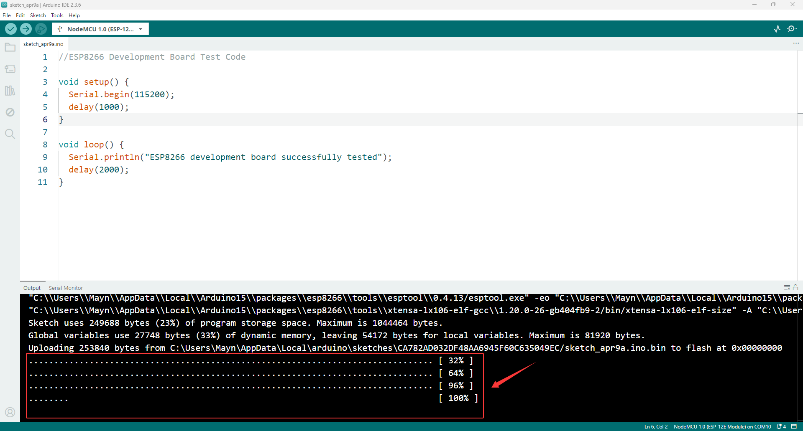
Once the output display shows that the upload is complete, press the RST button on the ESP8266 development board to start the program.
Open the serial monitor, set the baud rate to 115200, and you will see the serial port output “ESP8266 development board successfully tested” every 2 seconds.
{kind=link}
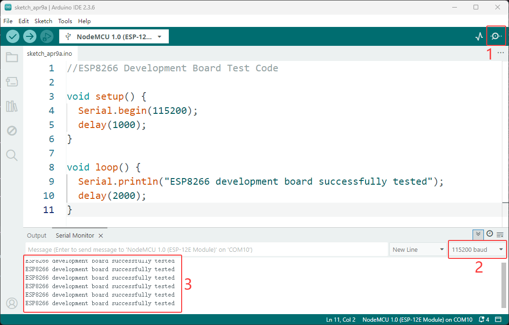
Congratulations! Your Arduino IDE is ready! Now you can start writing your first program!